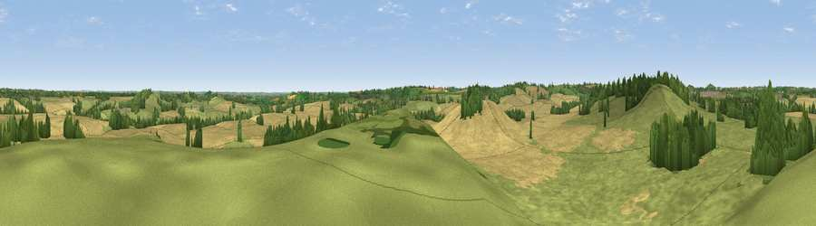

Viewpoint near Shutford
#26406 in England · top 48% of its area beats it · near ShutfordWhere it is
The exact computed spot (SP 38975 39475). Click the marker for map links.
The view, rendered

A 360° render of this exact spot computed from the terrain model, tree cover and land cover — summer colours, afternoon light, calibrated against photographs of famous viewpoints. Real trees, hedges and buildings will differ in detail.
The panorama
Grey silhouette: terrain skyline in each direction (720 bearings, Earth curvature and refraction included). Dashed green: skyline with trees (+15 m) and buildings (+8 m) as obstacles. Blue strip: how far the ground is visible on each bearing.
Where the view opens
Wedge length = distance to the farthest visible ground on that bearing (vegetation-aware). Rings at 10, 25 and 50 km.
What fills the view
53% grassland · 37% cropland · 10% woodland
Angular shares of the visible panorama (visual magnitude), not map area. Landscape diversity 0.42 (0–1 Shannon).
Key numbers
More beautiful places nearby
The staircase of upgrades: each row has a higher view potential than everything closer. Driving times are estimates from straight-line distance, calibrated against real road routing — check an actual route before setting out.
| Place | Direction | Drive | Score |
|---|---|---|---|
| Viewpoint near Shutford | WNW · 1 km | ~2 min | 46.5 |
| Epwell Hill | WNW · 4 km | ~10 min | 60.6 |
| Shenlow Hill | NW · 5 km | ~11 min | 65.9 |
| Viewpoint near Upper Tysoe | WNW · 6 km | ~12 min | 70.4 |
| Viewpoint near Radway | N · 9 km | ~18 min | 71.7 |
| Viewpoint near Ilmington | W · 18 km | ~32 min | 72.6 |
| Viewpoint near Meon Vale | WNW · 22 km | ~37 min | 77.0 |
| Broadway Hill | W · 28 km | ~44 min | 77.7 |
52.05230, -1.43303 · source: screening · position refined by local search. Computed location — check access rights before visiting.